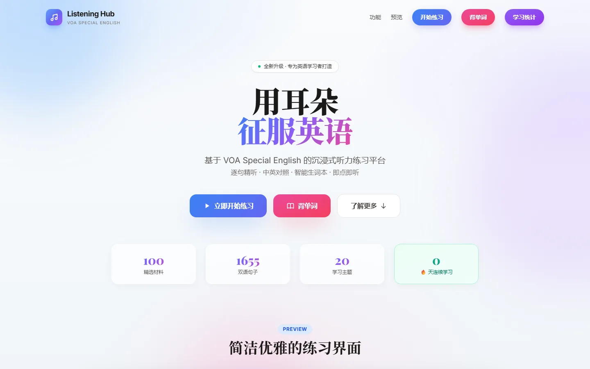
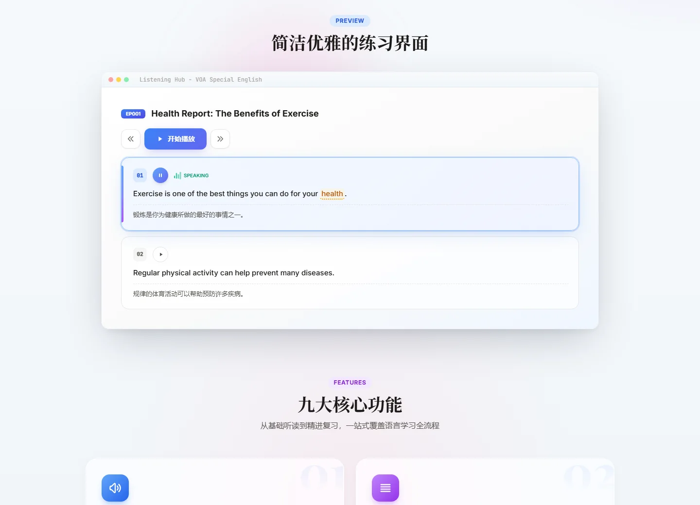

智能生词本
收藏的单词按 SM-2 间隔复习算法排期，忘得越快，出现得越勤。
英语学习 · Web / PWA · 可离线
基于 VOA Special English 的沉浸式听力练习。逐句精听、中英对照、点词即查，再把生词送进间隔复习，让每一次听力都留下点什么。


01 / 逐句精听
每篇材料拆成十几句，可以单句循环，也可以整篇连播。正在读的句子会高亮，英文下方是中文翻译，随时显示或隐藏。
02 / 学习闭环
听力里遇到的生词，会在合适的时间再回来找你。
收藏的单词按 SM-2 间隔复习算法排期，忘得越快，出现得越勤。
初高中、四六级、考研、托福、SAT 七大词库，卡片式记忆，释义可隐藏自测。
拼错次数自动换算成复习评分，错三次以上的词会自动进入生词本。
记录打卡天数、连续学习和已听句数，15 枚成就勋章覆盖听力和词汇。
03 / 架构
一个纯静态单页应用，打开就能用，装到桌面后断网也能练。
04 / 开始使用
直接在浏览器里打开，手机上也能用。